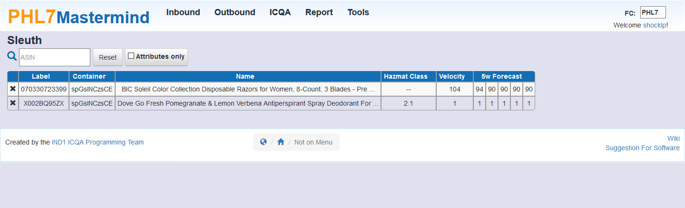
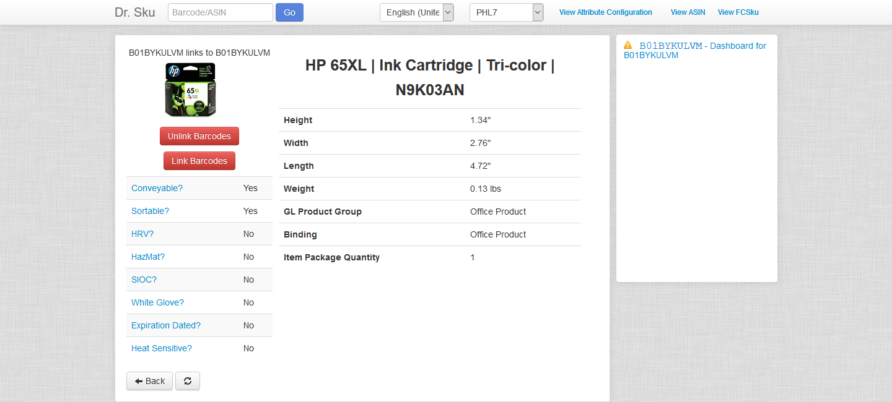

Helpful Tools for Problem Solvers
By: Phillip Shockley [shocklp]

Contents
|
Under Construction
- Sleuth
- This tool comes in handy when you have a kickout that "cannot find shipment data" either because of a missed sp00 or the wrong sp00 on the box.
Scan the items in the box/container and Sleuth with attempt to find the common container that those items share. (Will not work for multiple of the same item. Requires at least 2 unique ASINs)

- Dr. SKU
- Dr. Sku can be used to learn many things about a product including dimensions. 